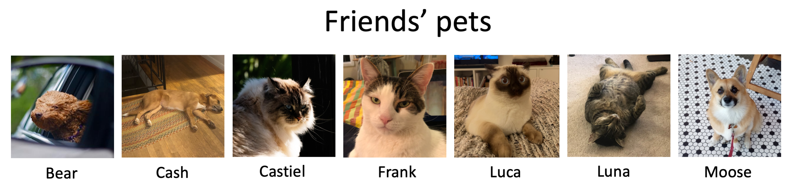
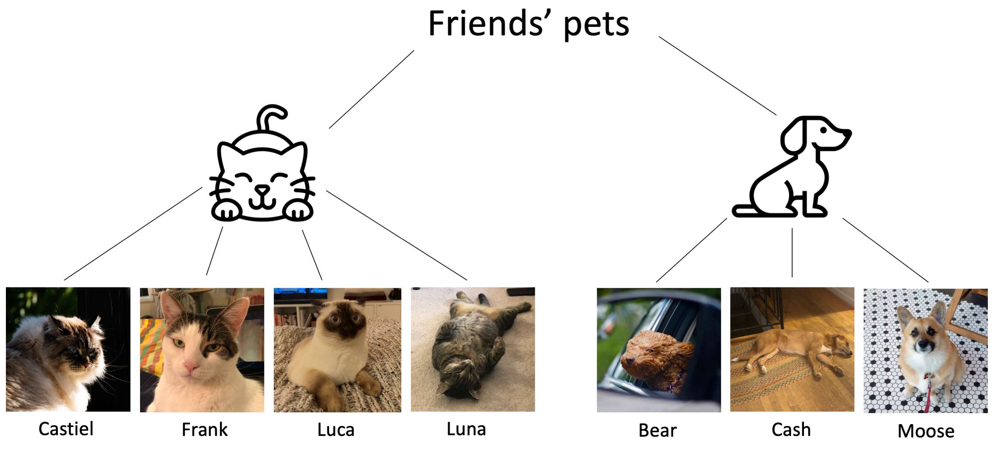
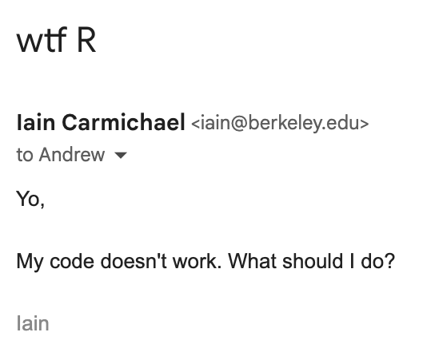
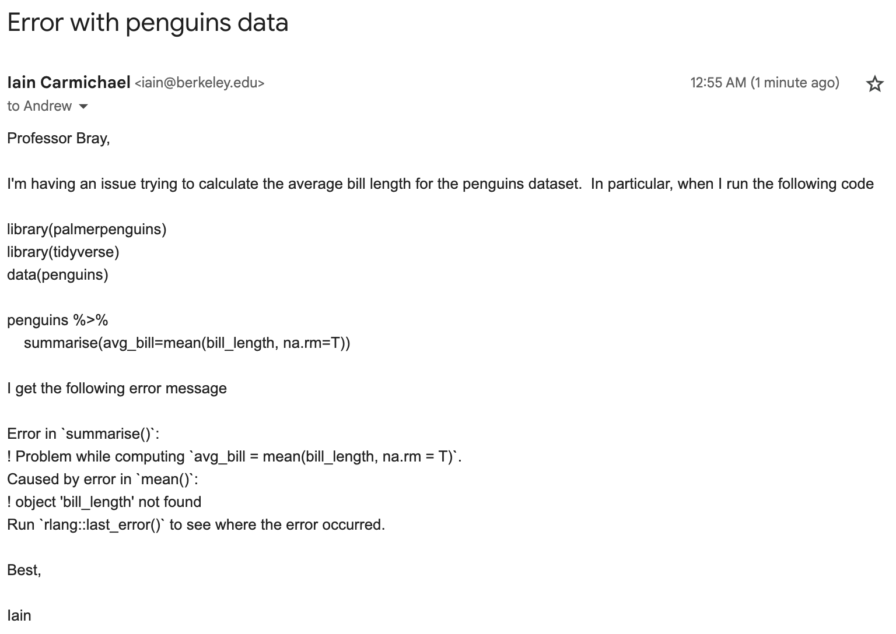
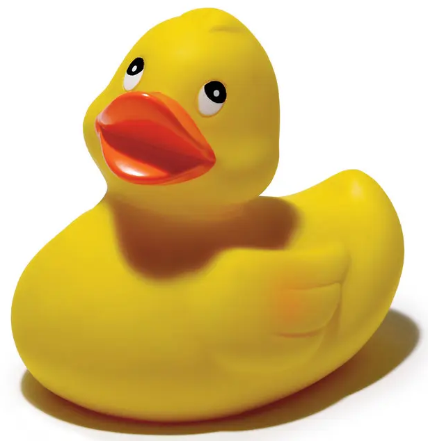

Principles and strategies to write, speak, make figures, and program better
These notes are from the Fall 2023 iteration of Stat20 at UC Berkeley.
At this point in the course we’ve learned a few statistical analysis methods including descriptive statistics, predictive models, and hypothesis testing.
When we analyze data we (usually) analyze it for a purpose such as drawing a scientific conclusion or helping an organization make a decision. For the results of our data analysis to have an impact, we have to communicate them to someone else.
Communicating well is difficult. It’s a skill that requires analytical reasoning, design, engineering, and empathy. Most importantly, effective communication requires intentionality, effort, and practice. Simply asking the question “what can I do to communicate this better” goes a long way.
These notes provide principles and strategies to follow to help you communicate more effectively. These ideas are useful across the board from programming to writing publications to making presentations to asking a colleague for help.
Communication in context
Effective communication is optimization under constraints.1
What makes for effective communication is context dependent; the context determines the constraints. The context may depends upon:
Audience (business executives, data scientists, etc)
Medium (slide show, text document, etc)
Purpose (convey results, impress an employer, etc)
Content (we built a predictive model, drug A doesn’t work, etc)
Time (do you have a day or a week to prepare?)
In data science we communicate through a variety of mediums:
The first three of these principles come from Trees, Maps and Theorems3 and are inspired by information theory.4
1. Adapt to your audience
Adapting to the audience means you take responsibility for the success or failure of your message reaching the audience. It comes naturally to us; you talk to your parents differently from how you talk to your best friend. The act of adapting requires empathy; you have to understand how the recipient perceives the information you are conveying. Adapting also requires some persistence; if the first strategy does not succeed then try another one.
Adapting is partially an act of generosity. How many hours of your life have been wasted sitting through a lecture that you didn’t get much out of? Communicating well is also self-serving; it will make your work more impact and advance your career faster.5
Understanding who is in the audience is a critical step. Some common types of audience members you may face include:
Familiar or unfamiliar with the topic
Technical or non-technical
Expert in the topic at hand or in a similar but distinct topic
Native or non-native language speakers
Interested or uninterested in the topic
Many audiences are heterogeneous, which presents an extra challenge.
It’s helpful to keep in mind limitations of your audience. You are probably much more familiar with the background/context of your work than your audience is. Many people in your audience will only skim or pay half attention to what you are saying. Structuring your communication with these constraints in mind will go a long way.
2. Maximize the signal-to-noise ratio
Focus on the important parts of what you’re saying (the signal) and minimize the unimportant details (the noise).
The audience sees every dot in a graphic and hears every word you speak. Anything that does not convey your message to the audience can hamper your message. Often message optimization is more about minimizing noise than maximizing signal.
For visualization, simple and focused is often better than fancy and detailed. For example watch the progression of a poor graphic to an effective graphic in this blog post.
It’s helpful to make documents/presentations/webpages consistent and minimal. For example, make all formatting (font, text size, structure, webpage style, graph colors, etc) uniform throughout. Changes in formatting will draw the audience’s attention so use it selectively. Similarly, bolding and emphasis words (very, really, etc) should be also be used selectively.
3. Use effective redundancy
If you convey your message in multiple ways the audience has more than one chance to understand the message. For example, stop sign conveys its message in three ways: color, text and shape.
Redundancy can also mean repetition. For example, for oral presentations:
Tell them what you are going to tell them. Tell them. Then tell them what you told them.
Stating the main points both at the beginning and end will reinforce your message to the audience.
4. Trade-offs
You may have come across the famous quote in an Economics class:
There ain’t no such thing as a free lunch.
There are usually trade-offs to decisions.
In the context of communication the biggest “cost” can be time spent preparing; it takes time to communicate well. Tweaking a single graphic can take hours. Your goal is not perfection; your goal is “good enough” for the purpose at hand.
“Good enough” is context dependent. An email to your friend might get a quick glace over while an email to a potential employer likely takes multiple rounds of revision.
Other trade-offs might include:
Provide more detail vs. make the content easier to understand
Targeting one audience vs. another audience
Communication strategies
This section discusses a number of strategies for effective communication.
Revise, revise, revise
Do many rounds of revision. This applies to coding, writing, oral presentations and making visualizations. Revision is one of the best ways to improve something. Stepping away then coming back will give your a fresh perspective. It will also help you catch errors.
You should constructively attack any work you are editing (both your own or someone else’s).
When giving someone else feedback on their work it is important to be constructive, respectful, and empathetic.
If you are publishing something publicly you should want revise it several times. If it’s something that really matters then you ideally want to outside feedback from several people.
State the message first and explicitly, then state the details
It’s often a good idea to state the message before the details of the argument in a presentation/written document. The message tends to be more important than the details, and the structure of the document tends to reflect this imbalance. The audience may not appreciate the message without motivation so providing context should come before the message.
Many professional communications are structured as:
Motivation (what is the problem and why should the audience care?)
The main message (how did you solve the problem?)
The details supporting the main results
When designing a graphic, presentation or document you should have a focus on conveying the message – the “so what?”
Too often, when we communicate with data, we don’t make our point clear. We leave our audience guessing. Your audience should never have to guess what message you want them to know. The onus is on the person communicating the information (you!) to make that clear.8
State the upshot of your presentation explicitly and at the beginning. It is tempting to save the conclusions until after presenting the details of the analysis or to assume the audience will just understand the point without you explicitly stating it. While these strategies may be effective for writing a novel, they are not effective for technical communication.
The rule of message before details applies both at a macro-scale (e.g. executive summary) and at a micro-scale (e.g. plot titles). Some concrete recommendations include:
Include an executive summary/abstract at the beginning of the document.
State the upshot of the graphic in the title (e.g. see this post).
Similarly for a PowerPoint, state the upshot in the title of a slide.
Functions should have informative names (e.g. str_extract (good) vs grep (bad)).
When communicating a complex concept (e.g. a theorem) state the intuition before formally defining the concept.
Focusing on the message first requires that you understand the message.
How can I know what I think till I see what I say?9
You sometimes have to write for a while until you understand what the thesis is.
Hierarchical is better than sequential
Humans tend to process hierarchical information better than sequential information.

Flat/sequential organization

Hierarchical organization
Textbooks are organized into: chapters, sections, subsections, paragraphs, sentences etc. Imagine if a textbook were just a straight wall of text! We categorize living creatures into a hierarchical taxonomy (kingdom, phylum, …). Items in grocery stores are group together in aisles/sections and the aisles are roughly arranged to be similar (e.g. the fruit section is near the vegetable section). The topics in stat20 are grouped together into units (e.g. questions, prediction, generalization). The taxonomy of data gives a hierarchical organization of data types.
Make the structure easy to navigate and understand
It’s helpful for the audience to know where they are (e.g. what lecture notes are you reading?) and ideally be able to navigate easily around a document. Our notes have a floating table of contents. Textbooks provide a table of contents, number section headings, and provide page numbers at the bottom. Websites typically have a site map at the top. In oral presentations it can be helpful to show the outline at the beginning and periodically state where you are in the lecture.
Communicate at multiple levels
The report you write about your data analysis might have different target audiences. If you analyze the efficacy of a medical device, your report might target doctors, business executives, and statisticians. Different members of the target audience will be interested in different parts of your report. The executives might just want to know the binary yes/no the device works; the doctors might want to know which patients the device was most effective for; the statisticians might want to know the details of the analysis you performed.
To satisfy all of these people simultaneously you have to write at multiple levels. For example, most scientific papers have a title, abstract, introduction, methods section, results section, and appendix. The executives might only want to read the title/abstract; the doctors might also want to read the results; the statisticians might be interested in details in the methods section and appendix.
Visualizations
Visualizations are some of the most powerful tools for communicating in data science. For a given analysis the best plot depends on the context. We often make two versions of the same plot, a quick exploratory plot then a more careful communicatory plot. These two types of plots serve different purposes.
To illustrate these two types of plots, let’s use a dataset from Capital Bikeshare.10 Capital Bikeshare is a bike sharing system for Washington DC that makes their hourly rental data publicly available.
When we first analyze a data set we often rapidly make many exploratory plots. Exploratory plots emphasize details over message and quantity over quality.
The target audience for an exploratory plot is the person making it and possibly close collaborators. It is created quickly (e.g. 2 lines of code) and contains lots of information.
Let’s take a look at the rental counts per hour over the course of the year for Capital Bikeshare (note working day = Mon-Fri vs. Weekend/Holiday).
This quick-and-dirty plot might be informative to an analyst familiar with this kind of data, but would be puzzling to someone else. Consider how much detail is present in this plot. Every observation in the data set is present in this plot - over 8,000 of them. With a careful eye, you can use the white grid lines to get a good sense of the precise x- and y-values of each observation. This is aided by the axes, which have many tick marks displaying the different values they can take.
This detail might be helpful to the seasoned analyst but could be confusing to the average viewer. Would they know what “factor(workingday)” means? Would they be able to come away with a single clear message of what the data show? Probably not. For that, we need a communicatory plot.
Communicatory plot: message and quality
After concluding an analysis, the final presentation will likely have several figures in them whose purpose is to effectively communicate the findings to the intended audience. The main purpose of a communicatory plot is message, not details. Often creating a good communicatory visualization is about decluttering. Less is more! For example, watch this blog post step through decluttering a poor visualization.
The plot below is designed to communicate the findings to a general audience (e.g. business executives). This plot took longer to make (30 lines of code) and focuses on the message.
Notice the design decisions that were made to hone the message:
Title states the message of the plot.
Use median count per hour as a summary instead of showing every data point.
Axes are labeled in clear english.
No background grid and fewer axis ticks.
The precise numbers are not important for the message.
Rush hour peaks are annotated for emphasis.
Working data is coded in two ways:
Color
Line type
You can learn how to customize ggplot through some googling.11
Programming
Writing code is an act of communication with two audiences: the computer and other programmers. Other programmers include a future you.
Coding
It is important to write readable software meaning code that is straightforward for someone to understand. Readability in software is an engineering principle; the easier your code is to understand, the less likely there is to be a bug, the faster you will debug issues that do come up, and the easier it is to modify.
There are a few techniques you can use to make your code more readable.
Use informative names that tell you what a variable/function/file is. For example, avg_loudness = mean(cat_meow_volumes) is better than a = mean(cmv).
Follow a consistent and standard naming format – typically either snake_case or CamelCase.
Use line breaks and indentation. For example, compare the following two snippets that do the same thing:
Comment your code. You can add comments to your code – lines of code that are read by humans but not the computer – with the # symbol.
# Calculate the average support for the People's Park Project by year before taking the survey# notice we have introduced a new function-- rename!ppk %>%rename(year = Q1, support_before = Q18) %>%group_by(year) %>%summarise(avg_support =mean(support_before, na.rm = T))
More generally, follow a consistent coding style. The norms you use for naming your variables, where you add white space and indentation, how to structure your comments - those are all wrapped up in what’s called the “style” of your code. Most large organizations and companies that write and share code, will insist that their coders write code in the same style. Many of them follow what’s called the Tidyverse style guide for R code.
Project organization
Use hierarchy to organize complex projects. For example, organize your work into folders and sub-folders. Take a look at the stat20 github repository. The units are collected at the top of the directory (e.g. 3-prediction/), within a unit the lectures are collected together (e.g. 15-classification/), which then contain the notes, slides, etc.
Files should be given descriptive names and ideally follow one of the standardized naming formats (e.g. snake_case or CamelCase).12
Asking for help

Bad question

Good question
We all get stuck coding and need to ask a friend/colleague/tutor for help. The way we ask for help matters. Asking questions in a more effective manner makes the question more likely to be answered, and answered faster. A good question is 1) complete, 2) minimal, and 3) reproducible.13 In other words, all of the relevant information needed to understand the issue is provided and all irrelevant information is stripped away. For example, you should send a snippet of R code instead of an entire qmd document with the little bit of relevant code buried in the middle. Ideally you should include some example code that your colleague can run to reproduce the issue you’re having.
Often the act of asking a good question will cause you to figure out the problem. By simply trying to explain what’s going on can cause you to see the issue. This called rubber duck debugging14 and can be an effective strategy to debug your code. Before bugging someone else with your error, first try picking up a rubber duck and explaining to problem to it.15

Making a pitch? Communicate a clear vision why someone should invest in you
There are many times in life when you have to pitch someone on giving you resources to accomplish something; applying for a job or graduate school, convincing your boss to green-light a project, or asking investors for money for your start-up. To make a compelling pitch you want to communicate why your audience should care about what you are doing – in particular, why they should spend their resources on your idea instead of on someone else’s idea. Try using the Heilmeier Catechism for inspiration when creating a pitch.16
To pitch effectively you should think about what your audience wants to hear. If a department admits you to its PhD program, what great things will your research accomplish? If an investor funds you, how much money will you make them? It can be useful to lay out what you are doing and why it is important in simple terms. The audience you are pitching to often has limited bandwidth to understand details of your idea (they are busy, read many applications, may not be domain experts, etc). When you can only communicate a little bit of information, that information better be good! Simplifying your idea can be difficult17 because you probably spend your time thinking about technical details instead of the big picture and you already understand the value of what you are doing.
Summary
These notes discussed four principles of communication (audience, signal-to-noise, redundancy, and trade offs) and a number of strategies (revision, message, hierarchy, structure, and multiple levels) to communicate more effectively. We then looked at how these strategies apply to making visualizations and programming. The content in these notes are guidelines, not laws. These are good things to default to, but there can be good reason to break from these guidelines. For example, suspense is a useful rhetorical device to keep an audience engaged, which may warrant not stating the message upfront. Furthermore, what “most effective” means can be subjective!
Businesses are not customer-minded (e.g. “the customer is always right”) out of the goodness of their hearts; adapting to their audience will earn them more money.↩︎
I tend to draft an email asking my question to a busy colleague whose respect is important to me, which forces me to really think through the issue.↩︎
These are suggestions for how to formulate a compelling pitch to solicit a significant amount of funding from DARPA, which is the US Defense Department’s agency for funding very ambitious research projects. This document elaborates more on these questions in the context of pitching ambitious health projects.↩︎
There is a famous Mark Twain quote “I didn’t have time to write a short letter, so I wrote a long one instead.” It’s hard to be succinct!↩︎